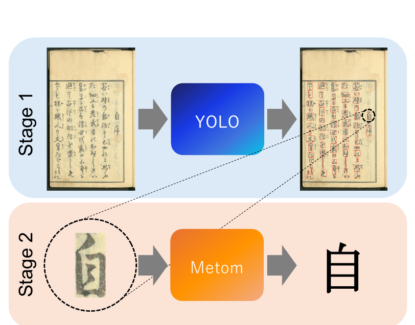
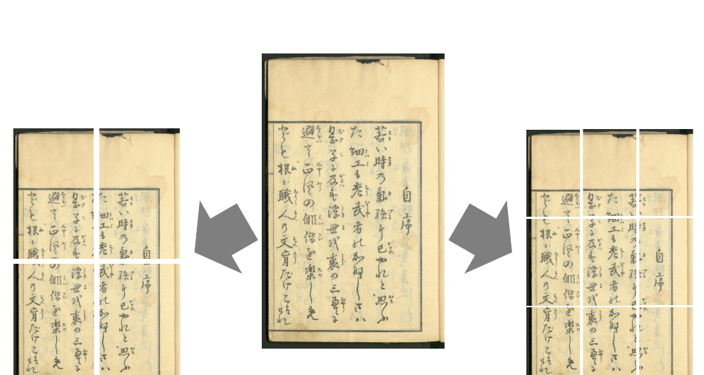
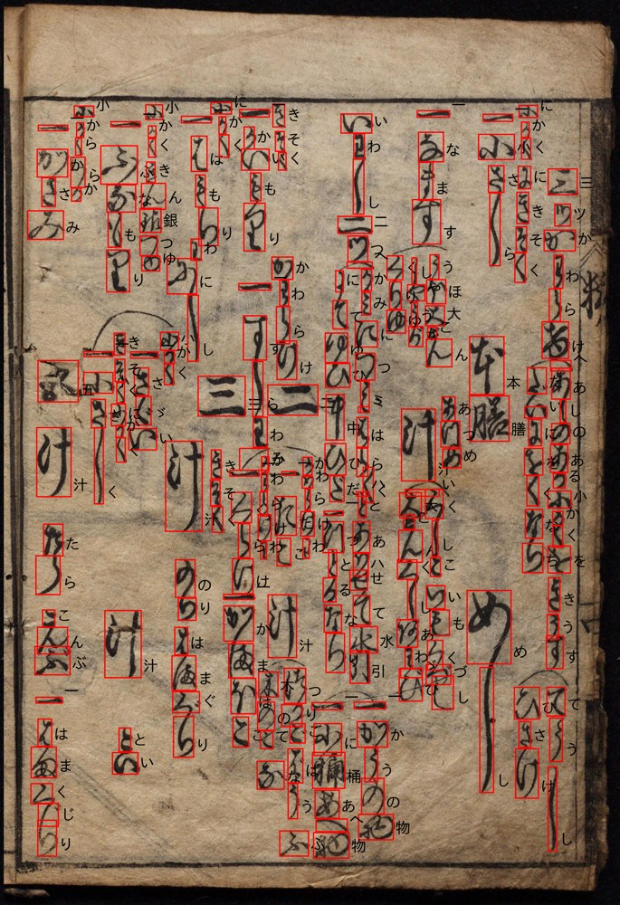

Abstract
Automated recognition of Kuzushiji, the cursive script of classical Japanese literature, is crucial for preserving cultural heritage, yet it poses significant challenges due to a large number of character classes, complex cursive forms, and non-grid layouts. While deep learning has advanced Kuzushiji recognition, many state-of-the-art methods rely on brittle, multi-stage pipelines prone to error propagation, or on complex end-to-end models that can be difficult to optimize. To overcome these limitations, this paper proposes K-ViT, a simple and effective two-stage framework that decouples the task into character detection and classification. We first employ a fine-tuned You Only Look Once (YOLO) model to accurately localize individual characters and then classify each detected character using the Metom model, a powerful, pre-trained Vision Transformer (ViT) model specialized for Kuzushiji. Experiments on the comprehensive Kuzushiji Dataset demonstrate that our approach achieves a new state-of-the-art F1 score of 0.972, significantly outperforming existing methods. K-ViT's robust and simple framework is important for digital preservation and downstream applications. It not only paves the way for large-scale analysis of historical documents but also stimulates industrial development in Japan by creating new applications in digital archiving, tourism, and content creation.
Method
K-ViT follows a two-stage detect-then-classify pipeline that decouples character localization from character recognition.
-
Stage 1 Character detection
YOLOv12x is fine-tuned to detect individual characters on the page. Training uses image tiling augmentation: each source page is used as a full image and is also divided into 2×2 and 3×3 overlapping tiles, giving 14× the training data. Test-time augmentation (TTA) is applied at inference.
-
Stage 2 Character classification
Each detected patch is classified by Metom, a Vision Transformer specialized for Kuzushiji (micro-accuracy 97.22% on its own test set).


Results
End-to-end character recognition
Character recognition F1 score on the CODH Kuzushiji Dataset (higher is better).
| Method | Backbone | F1 ↑ |
|---|---|---|
| KuroNet | Residual U-Net | F1 0.896 |
| Fujita et al. | CNN+Transformer | F1 0.865 |
| K-ViT (ours) | YOLOv12x+Metom | F1 0.972 |
Detection-stage ablation
The full detection model reaches mAP@50 0.980 on the test set. Removing image tiling or test-time augmentation drops detection performance substantially.
Dataset split
Experiments use the CODH Kuzushiji Dataset (DOI: 10.20676/00000340), split at the book level.
| Split | # of Books | # of Images | # of Instances |
|---|---|---|---|
| Train | 31 | 3,693 | 684,714 |
| Validation | 7 | 1,003 | 253,151 |
| Test | 6 | 713 | 148,422 |
| Total | 44 | 5,409 | 1,086,287 |
Qualitative result

Citation
@inproceedings{ishido2026kvit,
title={K-ViT: A Detection-first Framework for High-Fidelity Kuzushiji Recognition},
author={Ishido, Ryo and Fujita, Satoru and Oyama, Keizo},
booktitle={Proceedings of the 14th IIAE International Conference on Industrial Application Engineering 2026 (ICIAE2026)},
year={2026},
doi={10.12792/iciae2026.028}
}